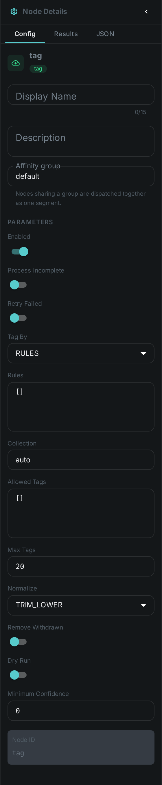
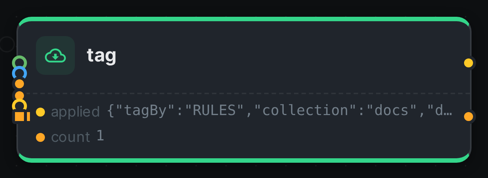

The Tag node writes tags onto your assets from rules you configure. It is the step that turns something a pipeline worked out — this photo is blurry, this clip is in German, this picture is mostly amber — into something you can search for.
That is the point of it. Most analysis nodes attach their answer to the asset as a structured result,
which is fine to read on the asset page and impossible to find by. A tag is different: the moment it
is written it becomes part of the asset’s search document, so blurry in the search box brings back
every blurry picture in the library.
Kind |
|
Applies to |
Any |
Input ports |
|
Output ports |
|
Requirements |
None. No model, no sidecar, no native library |
Persists to |
Tags on the asset, plus a record of what this node applied |
How a rule works
A rule reads: when this holds, attach this tag. Each rule is a row with a name and one or more conditions, and every rule is checked independently — an item can pick up several tags in one pass.
A condition names one of the node’s input ports, a comparison, and a value:
| Field | Meaning |
|---|---|
Input |
Which port to read: |
Path |
For |
Operator |
|
Value |
What to compare against. Not needed for |
A rule with several conditions fires when all of them hold. Set Match to ANY for a rule that
fires when at least one does.
Where the values come from is the connection you draw, not something you type into the rule. Wire
Quality into struct and your rules can threshold on blurriness; wire
Whisper into text and they can match on what was said.
A port nobody connected simply makes its conditions false. The node does not refuse to run and does not fail the item — it records the rule as skipped, so you can see on the asset that a rule never fired because a connection is missing rather than because nothing matched.
Tagging a list
Some nodes produce a list of words rather than one value: the colour names from
Dominant Colour, for instance. Connect that to the labels port and set
Tag by to Labels, and every entry in the list becomes a tag.
The same list can also drive a rule. Set For each to labels and use ${value} in the tag name to
build one tag per entry — lang:${value} turns a list of detected languages into lang:de,
lang:en and so on.
Keeping the tag list clean
Tags are shared across your whole library: two assets tagged blurry carry the same tag, and
renaming it renames it everywhere. That is what makes tags useful for searching, and it is also why
a node writing them automatically needs guard rails. There are four, and they are worth setting:
- Collection
-
Which collection the tags go into. Keep machine-written tags in their own collection — it is what lets you tell them apart from the ones people typed.
- Allowed tags
-
A list of the only names this node may write. Anything else is dropped and recorded as rejected. Use it whenever the names come from a list rather than from you: one unexpected word otherwise becomes a permanent entry in a list everyone shares.
- Max tags
-
A ceiling on how many tags one item can pick up. A rule that builds names from a list has no natural limit.
- Normalize
-
How a name is tidied before it is written. The default trims spaces and lowercases, so
Amberand `amber ` cannot become two separate tags.
Trying rules out first
Turn on Dry run and the node works out exactly what it would tag and records it on the asset, without attaching anything. That is the safe way to try a rule set against a real library: run it, look at what it decided, then turn it off.
Removing tags again
By default the node only ever adds. Turn on Remove withdrawn and it will also take back tags it applied on an earlier run that its rules no longer support — so fixing a threshold cleans up after itself instead of leaving the old verdict behind.
It will only ever remove a tag it can prove it wrote: one that is in its own record from a previous run and in the collection it writes into. A tag you added by hand, or one a different Tag node applied, is never touched — and the server enforces the same rule from its side, because every tag on an asset records who put it there.
Adding and removing happen together in a single write, so an asset is never left carrying the new verdict alongside the old one. The flip side is that a worker which is allowed to tag but not to untag cannot do half the job: with Remove withdrawn on it will report the item as failed rather than quietly adding without removing.
Telling machine tags from your own
Every tag on an asset carries the name of whatever attached it — a node, or manual when a person
did — along with the confidence and the time. Tags you typed and tags a pipeline worked out sit side
by side and stay distinguishable, so a view can show them differently, or hide the machine ones, or
let you confirm them one at a time.
The same asset can also carry one tag several times, each in its own place: two faces in a photo, one person at three points in a video. Each of those placements can be removed on its own without disturbing the others.
Configuration

Seeing it run
Turn on Debug Mode and every node keeps what it produced, on the
card itself. Below is a real run of this node over pexels-photo-2379005.jpeg.

The strip on the card lists what each output port carried — applied, count.
Use Cases
-
Quality triage — connect Quality and tag
blurry,low-resolutionorprint-ready, then find them from the search box. -
Colour facets — connect Dominant Colour to
labelsand get a colour vocabulary across the library, with an allowed list so only the colours you want appear. -
Editorial review — connect a transcript to
textand a tone score tonumber, and tagneeds-reviewwhen a recording is both negative and mentions a complaint. -
Findable metadata — connect Asset Metadata and tag what the files already say about themselves:
geotaggedwhen a photo carries coordinates,licensedwhen it carries a licence.
Notes
-
The node remembers its answer per item for the lifetime of the worker, so re-running a pipeline does not redo the same work. Changing the rules counts as a different question and is worked out afresh.
-
Two Tag nodes can sit in one pipeline — one for quality, one for colour — and each keeps its own record of what it applied, so neither can undo the other’s work.
-
Attaching a tag needs the worker’s Loom token to be allowed to tag assets, and Remove withdrawn additionally needs it to be allowed to untag them. Without the permission the item fails rather than quietly tagging nothing.
-
All the tags for one item are written in one go, however many rules fired — tagging a large library costs one write per asset, not one per tag.